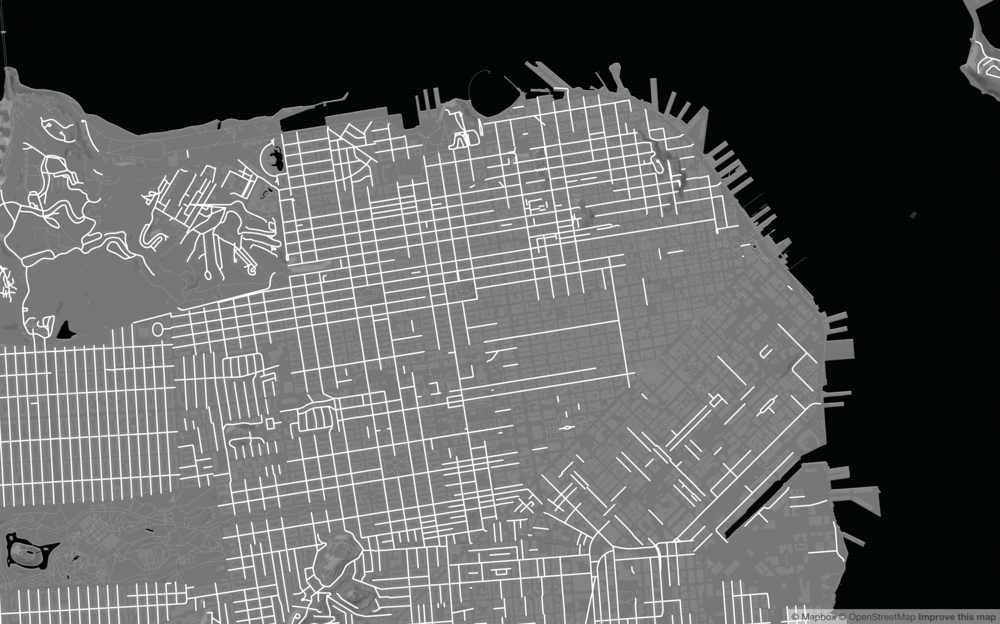
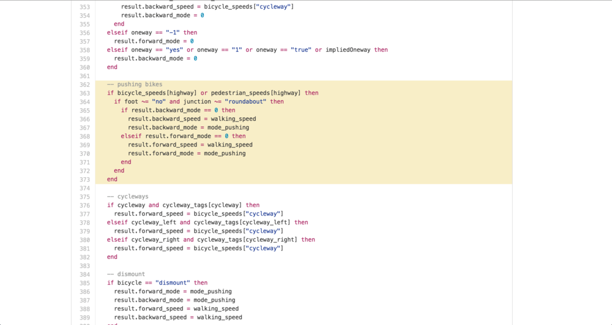
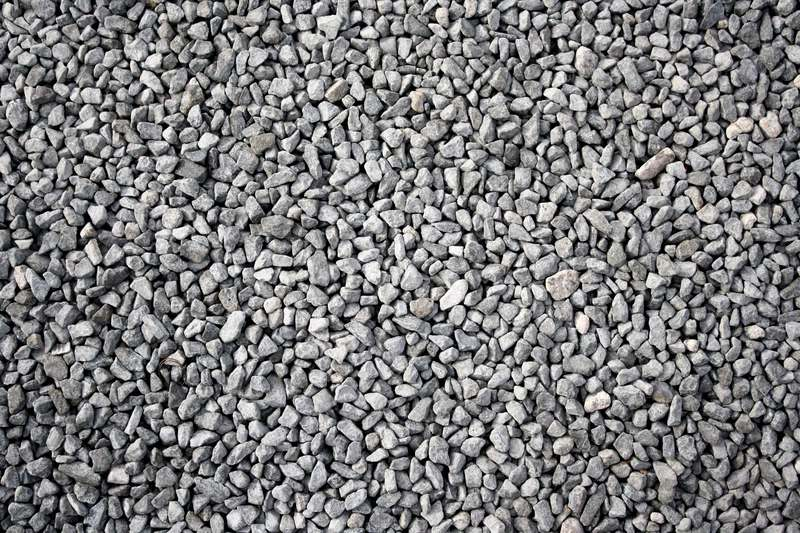
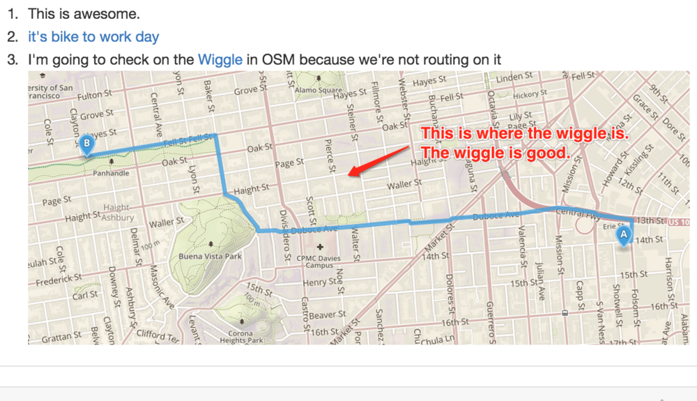

cycling directions with openstreetmap and OSRM
tw: @lbudorick /// gh: @lbud
* OSRM (powers routing on openstreetmap.org)
* want to talk about
* using OSRM
* developing OSRM
* improving OSRM with better data
* OSRM uses OpenStreetMap as its data source
contraction hierarchies
↑ preprocessing time
↓ query time
* won't go too far into routing algo:
* contraction hierarchies
* general rule of routing algorithms: tradeoff b/w preprocessing + query time
* CH at one extreme: lots of time preprocessing, queries in a matter of ms
 * what this preprocessing does
* reads routing profile, process OSM extract based on that profile
* ex: segway routing in SF
* kind of silly but bear with me
* important:
* maxspeed of segway is 12.5 mph
* only slow roads, no main, etc
* highway=residential
* maybe paths, no stairs, maybe some bicycle designations
* read all nodes ways: throw most away
* what this preprocessing does
* reads routing profile, process OSM extract based on that profile
* ex: segway routing in SF
* kind of silly but bear with me
* important:
* maxspeed of segway is 12.5 mph
* only slow roads, no main, etc
* highway=residential
* maybe paths, no stairs, maybe some bicycle designations
* read all nodes ways: throw most away

* absurd example but:
* point: routing engine's query algo doesn't change based on transportation profile,
* it's just querying diff graph you've built to begin with
* talking bicycle directions
* 3 default profiles: car, walking, bicycle
* Thx to Dennis Luxen, Emil Tin et al for great default profiles
* talk outline:
- your own bicycle routing profile
- cycling directions + OSM data
- OSRM roadmap
* how does the OSRM bicycle profile work, and how can you build your own?
* how can you help make cycling directions better with data? and
* what's on our OSRM roadmap to make cycling directions better?
OSRM profiles and bicycle routing
* walk through: how bicycle routing works in OSRM
* our default bicycle prof expresses traversal patterns of normal road/urban cycling — commuters
* assumes a few things about this bicyclist. for example:
✔️ bike on ferries
[START WALKTHROUGH]
* can route on ferries
✔️ public transit (trains)
* are ok with taking bike on public transportation (can take bike on train)
✔️ pushing on paths
* are ok with pushing bike on sidewalks where you can't ride
✔️ steps where necessary
* are ok with steps (these will be scored very low — speed=2 — but can be necessary)
local default_speed = 15
local walking_speed = 6
* sets some default speeds
bicycle_speeds = {
["cycleway"] = default_speed,
["primary"] = default_speed,
["primary_link"] = default_speed,
["secondary"] = default_speed,
["secondary_link"] = default_speed,
["tertiary"] = default_speed,
["tertiary_link"] = default_speed,
["residential"] = default_speed,
["unclassified"] = default_speed,
["living_street"] = default_speed,
["road"] = default_speed,
["service"] = default_speed,
["track"] = 12,
["path"] = 12
}
decide speed per road type
pedestrian_speeds = {
["footway"] = walking_speed,
["pedestrian"] = walking_speed,
["steps"] = 2
}
set walking way speeds
railway_speeds = {
["train"] = 10,
["railway"] = 10,
["subway"] = 10,
["light_rail"] = 10,
["monorail"] = 10,
["tram"] = 10
}
train speeds
amenity_speeds = {
["parking"] = 10,
["parking_entrance"] = 10
}
amenity speeds
platform_speeds = {
["platform"] = walking_speed
}
man_made_speeds = {
["pier"] = walking_speed
}
train platforms, piers
route_speeds = {
["ferry"] = 5
}
bridge_speeds = {
["movable"] = 5
}
ferries, movable bridges
traffic_signal_penalty = 2
use_turn_restrictions = false
local obey_oneway = true
local obey_bollards = false
local ignore_areas = true
local u_turn_penalty = 20
local turn_penalty = 60
local turn_bias = 1.4
local safety_penalty = 1.0
local use_public_transport = true
local fallback_names = true
* sets certain other rules based on our preferences for urban commuter --
*yes obay oneway,
* no obey bollards
[ END WALKTHROUGH ]
* how?
* we use Lua: scripting language that binds well to C++
* all profiles written in Lua bc OSRM's extractor binds specifically to 2 fns in a profile:
* node_function
* way_function
* these are crux of lua profs
* extractor parses all nodes + ways in parallel; runs thru respective profile-defined fns
NODES:
* important: whether traversable
* if it's barrier, no
* run through barrier + access lists: can we route through?
* save
 WAYS:
* 2 things:
* 1. can we traverse this way?
* 2. how fast?
* check tags and put it through the ringer: (point to slide)
* decide if we'll even keep
WAYS:
* 2 things:
* 1. can we traverse this way?
* 2. how fast?
* check tags and put it through the ringer: (point to slide)
* decide if we'll even keep
 SPEEDS
SPEEDS
 DIRECTIONALITY
DIRECTIONALITY

PUSHING
 EVAL CYCLEWAY TAGS
EVAL CYCLEWAY TAGS
 EVAL DISMOUNT TAGS
EVAL DISMOUNT TAGS
 EVAL SURFACE TAGS
EVAL SURFACE TAGS
 LIMIT -- return way with agg speed
* later: contractor will use these to build a graph
* but this is obv not indicative of all cyclists:
* consider types of biking. commuter/fastest, scenic/family, cargo, mountain…tolerance of elevation (will get to that later), etc
* BUT say, for ex, you want to use OSRM and write your own mountain biking profile
LIMIT -- return way with agg speed
* later: contractor will use these to build a graph
* but this is obv not indicative of all cyclists:
* consider types of biking. commuter/fastest, scenic/family, cargo, mountain…tolerance of elevation (will get to that later), etc
* BUT say, for ex, you want to use OSRM and write your own mountain biking profile
assumptions:
highway=path || highway=trackmtb=*! bicycle=no
* use mtn biking speeds
* prioritize xyz ways
* write a profile that looks a _little_ like profiles in OSRM: needs node_function and way_function
node_function (node, result)
result.barrier = false
end
* the primary goal of the node function, again: is it passable
way_function (way, result)
end
* primary goal of way function: how fast, if at all
TRANSITION: but maybe you've written this now and you find errors where you can't route A to B, etc
* OSRM is very mature, it can find where to go
* so your problem is data
osm data: help improve cycling directions
* OSM data quality is really important
* 3 things that can cause routing problems:
- coverage
- tag consistency/conventions
- connectivity
* coverage
* tagging consistency
* connectivity
* bc when you query OSRM instance, you're only querying modified graph of the parts of the world that the computer _thinks_ you can ride a bicycle on
* we say if you have empty or nonexistent…
≠ highway +
≠ route +
≠ railway +
≠ amenity +
≠ man_made +
≠ public_transport +
≠ bridge
highway +
route +
railway +
amenity +
man_made +
public_transport +
bridge
== building??
probably
* probably a bldg
* don't ride bike down bldg
* so if you want to route along something, needs to be tagged well
* data quality has got to be there
* OSM amazing bc has so much high quality bicycle data
* some companies have good bicycle data but not open-source or you can't buy or can't use independently of their products or contribute
* some don't have cycling data
* we're also working w RunKeeper to use cycling traces to make OSM's cycling coverage even better
* tagging quality: a lot, like tagging highway, is obvious. But some specifically/disproportionately affect bicycle routing:
surface tags
SURFACE TAGS
* so important
[START FLIPPING]
* can more or less walk/drive similarly on a lot of surfaces
* asphalt vs paving stones vs cobblestone vs gravel makes a huge difference to a road bicyclist

surface_speeds = {
["asphalt"] = default_speed,
["cobblestone:flattened"] = 10,
["paving_stones"] = 10,
["compacted"] = 10,
["cobblestone"] = 6,
["unpaved"] = 6,
["fine_gravel"] = 6,
["gravel"] = 6,
["pebblestone"] = 6,
["ground"] = 6,
["dirt"] = 6,
["earth"] = 6,
["grass"] = 6,
["mud"] = 3,
["sand"] = 3
}
* and we can set different preferences accordingly
* but we can only avoid your cobblestone road if it's tagged as a cobblestone road
cycleway tags
CYCLEWAY TAGS
* tag according to rules in OSM wiki [FLIP]
* so many complex combinations of highways + cycleways, separate or integrated bike lanes
[ FLIP THROUGH ]
* when in doubt, look it up
highway=* + cycleway=lane
highway=* + cycleway:right=lane
highway=* + cycleway:right=lane + oneway:bicycle=no
highway=* + oneway=yes + cycleway=lane + oneway:bicycle=no
highway=* + oneway=yes + cycleway:right=lane
highway=* + oneway=yes + lanes=2 + cycleway=lane
highway=* + bicycle=use_sidepath +
highway=cycleway + oneway=yes
highway=* + oneway=yes + bicycle=use_sidepath +
highway=cycleway + oneway=no
highway=* + oneway=yes + cycleway=opposite
highway=* + cycleway:right=lane + bicycle:backward=use_sidepath +
highway=cycleway + oneway=yes
highway=* + cycleway=track + segregated=yes + foot=designated
bicycle access tags
BICYCLE ACCESS TAGS
* pain, confused, inconsistent
[FLIP]
* bicycle=no vs bicycle=dismount, =permissive, =destination
* bicycle=no vs bicycle=dismount are often misused -- if `no`, can't ride a bike at all
* really bad for bike routing as we need to know when access is prohibited vs just riding
bicycle=yes
bicycle=designated
bicycle=use_sidepath
bicycle=no
bicycle=permissive
bicycle=destination
bicycle=dismount
oneway:bicycle=yes/no
(bicycle access tags)
width
maxspeed
lanes
other tags like width, maxspeed, lanes -- indicative of safety
connectivity
CONNECTIVITY
* routing engines: useful for finding errors
* crucial for routing
* ferry: you can bring bike on ferry, _only_ if it is connected to road network
* discussions of sidewalks as separate ways from roads
* idk but
* if profile says sidewalks are permissive (or pushing at least)
+ nearest neighbor to start pt is sidewalk
+ but sidewalks aren't well-connected to road graph
+ routing will break down: problematic
* tldr: you can do a lot in OSM to help make cycle routing better
what we're doing to make cycling directions better in OSRM
OSRM ROADMAP
* recently rolled out to Mapbox internal, feedback like what
[ FLIP THROUGH ]

example: work to my old house, (explain the wiggle)
 (slide with the wiggle)
* flat + designated bicycle route
* 2 reasons why OSRM doesn't route:
* doesn't support external data in mainline OSRM
* doesn't support relations
(slide with the wiggle)
* flat + designated bicycle route
* 2 reasons why OSRM doesn't route:
* doesn't support external data in mainline OSRM
* doesn't support relations
external data support
EXTERNAL DATA
* integrate external data in profile
[talk talk talk]
elevation_source = load_raster_source(
"the-whole-world-SRTM.asc"
)
(SRTM import code)
terribleness =
get_raster_data(elevation_source, start.lon, start.lat) -
get_raster_data(elevation_source, end.lon, end.lat)
> :( :(
(SRTM query code)
much_danger = ("sf-bicycle-injuries.asc")
stay_awayyyyy = get_raster_data_interpolated(
much_danger, lon, lat)
(bike injuries import/query code)
relation support
RELATION SUPPORT
* nodes and ways are straightforward
* relations more arbitrary data model
* will be parsing relations not in parallel but working on not adding too much overhead
 (SF without bike routes)
(SF without bike routes)
separate speed and edge weight
SEPARATE SPEED + EDGE WEIGHT
* way_function returns speed, which is used to calculate preferability
* works well for vehicle
* assumption breaks down w bikes: explain
* in routing, we indicate preference as heuristic that's read by the routing engine when choosing the next edge to explore
* right now OSRM uses speed as only heuristic
* so to tell engine this is unsafe or hill sucks, we have to give it low score
* then travel time is wrong
 (north beach to presidio, no elev) -
goes over russian hill O_O
(north beach to presidio, no elev) -
goes over russian hill O_O
(north beach to presidio, rather go to north point/bay st)
* so I'd rather get this
* but it will only return if it's best-scored
* and to say it's faster is a lie, it's just easier
better cycling directions with
OSM and
OSRM
github.com/Project-OSRM
@lbudorick
end